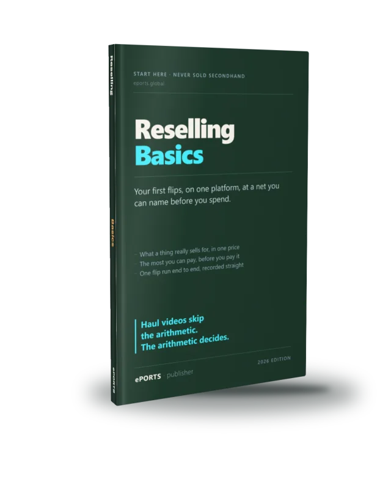

Your first profitable flips, on one platform, at a net you can name
For: you've never sold a thing secondhand, and you're not sure it's more than luck.
You finish with: one real flip run end to end — sourced against real sold-price evidence, priced to a net you can name before you spend, listed honestly, and recorded straight, with a routine for whatever it does next.
Nine chapters: the honest deal (the labor, and the four operating numbers that keep you from quitting), picking one platform — eBay — and exactly why, reading a messy "sold" screen down to one conservative price, the deal sheet and the most you can pay, eBay's real fee (bigger, and on more, than you think), shipping and the honest buy-or-walk call, a listing that sells and sticks, pressing publish and starting the records-and-tax ledger, and the fourteen-day routine for what sells — or doesn't.
Comes with, free: the operating commitment, the account setup, the sourcing comp check, the real-net & max-buy calculator, the honest-listing checklist, the records ledger and the 14-day protocol — all at the resource page.